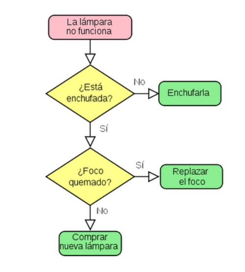

Algoritmos
Después de analizar en detalle el problema a solucionar, hemos de diseñar y desarrollar el algoritmo adecuado.
¿Qué es un algoritmo?
Un algoritmo es una secuencia definida, ordenada y finita de instrucciones que permiten hallar la solución a un problema.
- Un mismo algoritmo puede ser expresado en diferentes lenguajes de programación y podría ser ejecutado en diferentes dispositivos.
- Son independientes de los lenguajes de programación y de las computadoras donde se ejecutan.
Diseño de los algoritmos
El diseño de los algoritmos será una tarea que necesitará de la creatividad y conocimientos de las técnicas de programación. Estilos distintos, de distintos programadores a la hora de obtener la solución del problema, darán lugar a algoritmos diferentes, igualmente válidos.
Para construir un edificio, hay que empezar por los cimientos. Esto se puede aplicar también a la programación. A lo largo del tema, aprenderás cómo se crea un programa y un algoritmo. Pero antes de llegar a este punto, es necesario establecer una serie de normas o condiciones que debe cumplir el diseño de un algoritmo para que su desarrollo posterior, y por tanto el del programa que genere, sea correcto.
En esencia, todo problema se puede describir por medio de un algoritmo y las características fundamentales que éstos deben cumplir son:
- Debe ser preciso e indicar el orden de realización paso a paso.
- Debe estar bien definido, si se ejecuta dos o más veces, debe obtener el
mismo resultado cada vez. - Debe ser finito, debe tener un número finito de pasos.
Diseño modular
Pero cuando los problemas son complejos, es necesario descomponer éstos en subproblemas más simples y, a su vez, en otros más pequeños.
Estas estrategias reciben el nombre de diseño descendente, diseño modular o top-down design. Este sistema se basa en el lema divide y vencerás.
Técnicas de diseño
Para representar gráficamente los algoritmos que vamos a diseñar, tenemos a nuestra disposición diferentes herramientas que ayudarán a describir su comportamiento de una forma precisa y genérica, para luego poder codificarlos con
el lenguaje que nos interese.
Entre otras tenemos:
- Diagramas de flujo: esta técnica utiliza símbolos gráficos para la representación del algoritmo. Suele utilizarse en las fases de análisis.

- Pseudocódigo: esta técnica se basa en el uso de palabras clave en lenguaje natural, constantes, variables, otros objetos, instrucciones y estructuras de programación que expresan de forma escrita la solución del problema. Es la técnica más utilizada actualmente.
EJEMPLO: Realizar el pseudocódigo de un programa que permita calcular el área de un rectángulo. Se debe introducir la base y la altura para poder realizar el cálculo..
Programa área
Variables: BASE, ALTURA, AREA son número enteros
Algoritmo:
escribir “Introduzca la base y la altura”
leer BASE, ALTURA
calcular AREA = BASE * ALTURA
escribir “El área del rectángulo es “AREA
Fin programa
Ejemplo
¿Tienes conocimiento de como se hace un pastel de manzana?
La receta se resume en los siguientes pasos:
- Paso 1 Calentar el molde con algo de mantequilla
- Paso 2 Mezclar harina, azúcar, leche y huevos en un recipiente y batir con la batidora.
- Paso 3 Untar de mantequilla todo el molde
- Paso 4 Pelar 4 manzanas y echarlas en el molde.
- Paso 5 Rociar con la mezcla.
- Paso 6 Meter en el horno durante 45 minutos.
De esta forma se concluye de manera muy sencilla con la elaboración del pastel de Manzana.
Después de la breve explicación en la secuencia de pasos que se realizan para la elaboración de un pastel, podemos afirmar lo siguiente:
Un programa no es más que un conjunto de instrucciones dadas al procesador, que es el cerebro del ordenador. Y, como vemos, es como una receta de cocina.
A menudo, en nuestro programa se dan muchas cosas por sobreentendidas. Por ejemplo, "calentar el molde con algo de mantequilla" tiene numerosas implicaciones:
- Coger un molde. (Buscar el molde dentro del anaquel de la cocina)
- Coger la mantequilla .(Abrir la nevera y sacar la mantequilla)
- Echar mantequilla en el molde. (Tomar la mantequilla junto con el molde y luego colocar la mantequilla)
- Abrir la tapa del horno. (Acercarse al horno colocarse un guante en la mano y luego abrir el horno)
- Meter el molde .(Luego de abrir el horno con cuidado , tomar el molde con la masa y luego colocarlo en el horno)
- Cerrar la tapa del horno.
- Encender el horno. (Buscar un encendedor, abrir la llave de gas y luego encender el horno)
Tarea
1. Liste los pasos que realiza para prepararte por las mañanas un día de clase
Observación: Se debe indicar por medio de una lista detallada cada uno de los pasos que realiza, desde que se levanta de la cama hasta cuando se sale de casa
(El profesorado dará otros supuestos prácticos)
2. Indica las variables, estructuras de control y secuencia:
Programa 1: Elabore un programas que sume 5 números.
Programa 2: Elabore un programa que reste 2 números.
Programa 3: Elabore un programa que multiplique 4 números.
Programa 4: Elabore un programa que divida 2 números.
(El profesorado dará otros supuestos prácticos)
- ¿Por qué es importante identificar cada uno de los pasos en nuestra secuencia de instrucciones?
Obra publicada con Licencia Creative Commons Reconocimiento 4.0